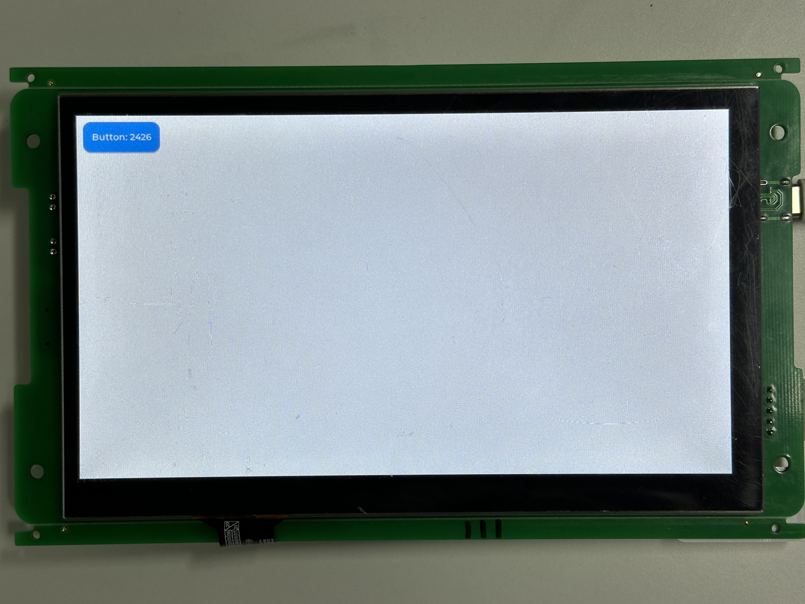

添加应用
9 Apr 2025
Read time: 3 minute(s)
本章节演示如何添加一个名为
test_demo 的 LVGL
应用，来实现以下功能：
-
主界面添加一个 button 控件，按键时，在控件上显示当前后台计数。
-
后台线程进行计时，每一秒计数加一。
添加 APP 选项
在 application/Kconfig
中，添加以下代码：
config AIC_LVGL_METER_DEMO
bool "LVGL demo of meter"
config AIC_LVGL_TEST_DEMO # 添加 AIC_LVGL_TEST_DEMO，以便在 menuconfig 菜单中选择
bool "LVGL demo of test"
config AIC_LVGL_LAUNCHER_DEMO
bool "LVGL launcher demo"配置 APP
-
选择 APP使用 scons --menuconfig 或 me 进入配置菜单，选择新添加的
test_demo并保存：Application options ---> [*] ArtInChip LVGL demo ---> select LVGL demo (LVGL demo of test) ---> ( ) LVGL demo with basic function ( ) LVGL demo of meter (X) LVGL demo of test ( ) LVGL launcher demo -
配置素材路径
Application options ---> [*] Using File System Image 0 (packages/artinchip/lvgl-ui/aic_demo/test_demo/lvgl_src/) Data Directory # 该路径以 SDK 为根目录，根据实际情况自行修改 [*] Using File System Image 1 (packages/artinchip/lvgl-ui/aic_demo/test_demo/lvgl_src/) Data Directory # 该路径以 SDK 为根目录，根据实际情况自行修改
源码适配
源代码
-
下载完整源码包
test_demo。 -
将源码解压缩至 packages/artinchip/lvgl-ui/aic_demo 目录下，文件结构为：
tree -h
. └── [4.0K] test_demo ├── [4.0K] lvgl_src │ └── [ 0] readme.txt # 该文件用于验证资源打包，本身为空文件 ├── [ 571] SConscript ├── [4.0K] thread │ ├── [1.0K] test_thread.c │ └── [ 211] test_thread.h └── [4.0K] ui ├── [1.3K] test_ui.c └── [ 228] test_ui.h
-
SConscript 更改根据实际项目路径修改
test_demo中的 SConscript，解析如下：from building import * import os cwd = GetCurrentDir() group = [] src = Glob('*.c') # 源文件路径 src += Glob('./ui/*.c') src += Glob('./thread/*.c') CPPPATH = [cwd] # 头文件路径 CPPPATH.append(cwd + './ui') CPPPATH.append(cwd + './thread') list = os.listdir(cwd) for d in list: path = os.path.join(cwd, d) if os.path.isfile(os.path.join(path, 'SConscript')): group = group + SConscript(os.path.join(d, 'SConscript')) # AIC_LVGL_TEST_DEMO 宏需要与 application/Kconfig 中添加的宏一致 group = group + DefineGroup('LVGL-port', src, depend = ['AIC_LVGL_TEST_DEMO'], CPPPATH = CPPPATH) Return('group')
对接 LVGL 框架
Luban-Lite SDK 中，已经融合了 LVGL-8.3.2，并与 AIC 芯片硬件接口、加速模块、触控等进行了对接，因此用户只需要将 UI 部分的功能接入即可。
在 packages/artinchip/lvgl-ui/aic_ui.c
中，添加：
/* * Copyright (C) 2022-2023 ArtinChip Technology Co., Ltd. * Authors: Ning Fang <ning.fang@artinchip.com> */ #include "lvgl.h" #include "aic_ui.h" #include "aic_osal.h" #ifdef AIC_LVGL_TEST_DEMO #include "test_demo/thread/test_thread.h" #include "test_demo/ui/test_ui.h" #endif void aic_ui_init() { #ifdef AIC_LVGL_BASE_DEMO #include "base_ui.h" base_ui_init(); #endif #ifdef AIC_LVGL_METER_DEMO #include "meter_ui.h" meter_ui_init(); #endif #ifdef AIC_LVGL_LAUNCHER_DEMO extern void launcher_ui_init(); launcher_ui_init(); #endif #ifdef AIC_LVGL_MUSIC_DEMO extern void lv_demo_music(void); lv_demo_music(); #endif #ifdef AIC_LVGL_TEST_DEMO test_thread(); test_ui_init(); #endif return; }
效果展示
编译、烧录后，显示效果如下图：
